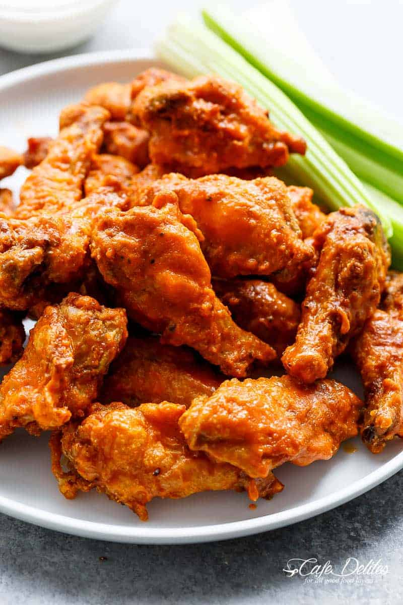

Wendy's Wonderful Wings

Waaaaaay up, I want WINGS!
Some day... some day... we're going to be GREAT. But first, wings. These wings are the perfect meal to make when you're hungry and want something snappy and fun. Perfect meal
for when the friends come over to watch the game. Or as an appetizer for your next party. Either way, these wings will probably be the highlight of the night!
Ingredients
Chicken Wings:
- 2 Kg (4 pounds) chicken wings cut into drumettes and flats
- 1 tablespoon aluminium free baking powder (NOT baking soda)
- 1/2 teaspoon salt
- 2 teaspoons garlic powder
- Pinch of cracked pepper
Buffalo Sauce:
- 1/4 cup unsalted butter, melted
- 1/2 cup Frank's Original Red Hot Sauce
- 1-2 tablespoons honey, white sugar or brown sugar (adjust to suit your tastes)
Blue cheese dip:
- 1/2 cup crumbled blue cheese softened
- 1/3 cup sour cream
- 1/4 cup mayonnaise
- 2 cloves garlic minced
- 1 tablespoon lemon juice
- Pinch of salt
- Pinch of cracked black pepper
To serve:
- Ranch dressing
- Blue cheese dressing (RECIPE AS ABOVE) for serving
- Celery sticks for serving
Steps
- Adjust oven rack to upper-middle position and preheat oven to 450°F (230°C). Line a rimmed baking sheet with aluminium foil and set a heat-proof wire rack inside.
- Pat dry chicken wings liberally with paper towels, squeezing out as much moisture as you can. Transfer them to a large bowl.
- In a small bowl, combine the baking powder, garlic powder, salt and pepper together, whisking well to combine, and sprinkle the mixture over the wings. Toss wings through the baking powder mixture until evenly coated.
- Arrange on rack, leaving about 1-inch of space between each wing.
- Bake for 30 minutes; flip and continue to cook until crisp and golden brown, (about 20-30 minutes longer), until golden browned and crispy.
- While wings are cooking, whisk together hot sauce, butter and sugar. Toss wings through the sauce to evenly coat.
- Serve wings immediately with blue cheese dressing or ranch dressing, and celery sticks.
Recipe taken from here